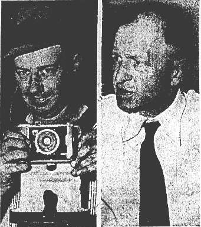

Au soir du près de McMinnville (Oregon)
, Evelyn Trent distribue de l'herbe aux lapins de la ferme. Tout d'un coup, elle aperçoit un appareil au-dessus des
bâtiments de l'exploitation. Elle appelle aussitôt son mari Paul, fermier, qui va chercher l'appareil photographique
familial, un Polaroïd. Le fermier prend 2 clichés, de 2 points différents distants de quelques m. Il déclarera
plus tard que le disque avait parcouru le ciel du Nord-Est au Nord-Ouest sans faire aucun bruit.
Les Trent n'attachent pas une importance excessive à ces clichés. Il reste encore quelques poses dans l'appareil et
ils attendent que le rouleau de la pellicule soit terminé pour le donner à développer. Ils n'ont guère conscience de
l'intérêt que peuvent représenter ces images, et c'est par hasard qu'un reporter du journal local en entend parler. La
nouvelle se répand très vite. On s'arrache bientôt les photographies, qui sont reproduites dans Life"Farmer Trent's Flying Saucer", Life, 1950-06-26 et dans les plus grandes revues
internationales.
Ne comptant pas gaspiller de la pellicule, Paul Trent attend de l'avoir terminée, le jour de la fête des mères, avant
de les donner à développer au drugstore de la 3ᵉ rue, à McMinnville. Ce jour-là, il en parle au banquier Ralph
Wortman.
Enquêtes

Trent avec son appareil et le banquier Ralph Wortman, qui incita ce dernier à faire connaître son
affaire au public Une du Portland Oregon Journal, 1950-06-10
Wortman prévient Phil Bladine, le rédacteur-en-chef du journal local, le Telephone Register
(aujourd'hui le News Register), qui dépêche sur place le
journaliste Bill Powell. Le , l'affaire est publiée :
Pas de tache de café - pas hallucinations. L'appareil photo de Paul Trent, route 3, McMinnville, a capturé les
photos ci-dessus d'objets volants qui pourraient très bien être les seules images existant des très controversées
et souvent-raillées soucoupes volantes.
Prises il y près de 1 mois depuis la cour de la maison de sa ferme à 11miles au Sud-Ouest de McMinnville, les clichés de Trent
furent dévoilés lorsqu'un journaliste du Telephone Register suivit un tuyau donné par Ralph et Frank Wortman,
banquiers de McMinnville. Ils avaient vu les clichés et voulaient soutenir la véracité de la réputation de Trent.
Trent était réticent à autoriser l'utilisation des clichés. J'ai peur d'avoir des ennuis avec le
gouvernement, s'inquiéta-t-il.
Les 2 photos furent prises le 11 mai avec le Kodak de Trent.
On allait vers le soir - environ 8 heures moins le 1/4, dit la femme de Trent, Evelyn. "Nous étions dehors
dans la cour. Nous avons vu l'objet tous les 2 au même moment. L'appareil photo ! Paul pensait qu'il était dans la
voiture, mais j'étais sûre qu'il était dans la maison. J'avais raison - et le Kodak était chargé avec une
pellicule. Paul prit la 1ʳᵉ photo (ci-dessus à gauche). L'objet arrivait vers nous et semblait être légèrement
incliné. Il était très brillant - presque argenté - et il n'y avait aucun bruit ni fumée."
Trent expliqua qu'il prit la 1ʳᵉ photo, rembobina son film aussi vite que possible puis, alors que l'objet
gagnait de la vitesse et tournait vers le nord-ouest, dû se déplacer rapidement sur sa droite pour obtenir la 2de
image. Toutes 2 furent prises en , estima-t-il.
Le Telephone Register titrant sur Enfin - d'authentiques photographies de soucoupe
volante [?]
Taille ? Vitesse ? Distance ? Ni Trent ni sa femme ne se hasarderaient à faire une supposition. Tout ce que je
sais, c'est qu'il se déplaçait terriblement vite, dit Trent. Les 2 photos indiquent clairement une
superstructure et celle de droite ressemble au sous-marin volant vu par un pilote de ligne au-dessus des
monts Cascade il y a près de 1 an.
Que sont-elles ? Eh bien, je pense que ce sont les nôtres, dit Trent.
Le journaliste dit qu'il l'espérait aussi.
(Note du rédacteur : Le Telephone Register ne se professe pas lui-même expert dans le
domaine des soucoupes volantes. Cependant, au regard de la variété d'opinions et de rapports attendant aux
soucoupes durant les 2 dernières années, tout effort a été fait pour vérifier l'authenticité des photos des Trent.
Des experts photographes ont déclaré qu'il n'y avait eu aucune modification des négatifs. Les photos d'origine
furent développées par une compagnie locale. Après un examen attentif, il n'apparaît aucune possibilité de canular
ou d'hallucination lié aux photos. Par conséquent le Telephone Register les considère authentiques. Que
sont-elles ? L'avis du lecteur vaut le nôtre)
Dès le lendemain Trent est assailli d'interviews et l'histoire se répand rapidement dans les journaux du pays, dont
le leader de l'époque, Life, qui interroge Trent le et publie les photos en
. De nombreuses demandent affluent au Telephone Register. Certains, tels Frank Edwards, ne veulent qu'obtenir des copies de l'article, alors que d'autres
souhaitent témoigner de leurs propres observations.
Quelques critiques sont émises (les témoins ont parfois varié dans leur récit de l'histoire, les ombres font penser
à une photo prise le matin plutôt que le soir), mais sans vraiment convaincre (répéter toujours la même histoire
peut-être considérée comme une histoire apprise par cœur, dira Bruce Maccabee, et on ne
voit pas pour quelle raison les Trent auraient menti sur l'heure de prise des photos).
Photo en presse
En la Royal Air Force Flying Review consacre un article Norris, Geoffrey: "Something in the Sky", Royal Air Force
Flying
Review, 1957-07, pp. 14-16 aux ovnis et publie une photo étrangement semblable à celle de McMinnville.
Sa légende cependant, est différente : Ovni photographié au-dessus de Rouen en mars, cette année. À partir
de cette date ces ovnis "jumeaux" alimenteront une controverse, certains y voyant un objet identique plutôt qu'une
photo identique. On ne retrouvera cependant jamais d'autre trace de cet "ovni de Rouen" que cet article.
Condon
En ces 2 clichés sont les seuls à ne pas être contestés par le Rapport Condon publié par l'USAF
Hartmann, W. K.: "Cas 46 - McMinnville (Oregon)", Scientific Study of Unidentified Flying Objects, 1969.
Le rapporteur, William K. Hartmann, pourtant peu complaisant et fortement enclin au
scepticisme, déclare que les éléments de l'enquête, qu'il s'agisse des photographies elles-mêmes ou du récit des 2
époux, permettent d'affirmer qu'un objet volant inconnu, en forme de disque métallique argenté avait été vu par
2 témoins alors qu'il traversait le ciel. Hartmann ajoute que l'hypothèse d'une mystification ne doit
cependant pas être totalement exclue.
La clarté de l'arrière-plan et de l'avant-plan permettent d'évaluer la dimension et la distance de l'objet.
L'enrichissement colorimétrique, en affectant à chaque nuance de gris une couleur différente, fait apparaître les
détails avec plus de netteté. Ce procédé confirme le fait que le disque était solide, possèdait un diamètre de 20
à 30 m (1 m ?), se trouvait à environ 400 m de distance et était constitué d'une matière hautement réfléchissante.
En , Bruce Maccabee acquiert les négatifs et entame sa propre
analyse. Il publie un rapport de 46 pages en Maccabee, B. S.: "The McMinnville Photos", The Spectrum of UFO Research, CUFOS, 1988, puis un addedum de 6 pages en Maccabee, B. S.: "The Trent farm photos" - Maccabee a interrogé les Trent de nombreuses fois.